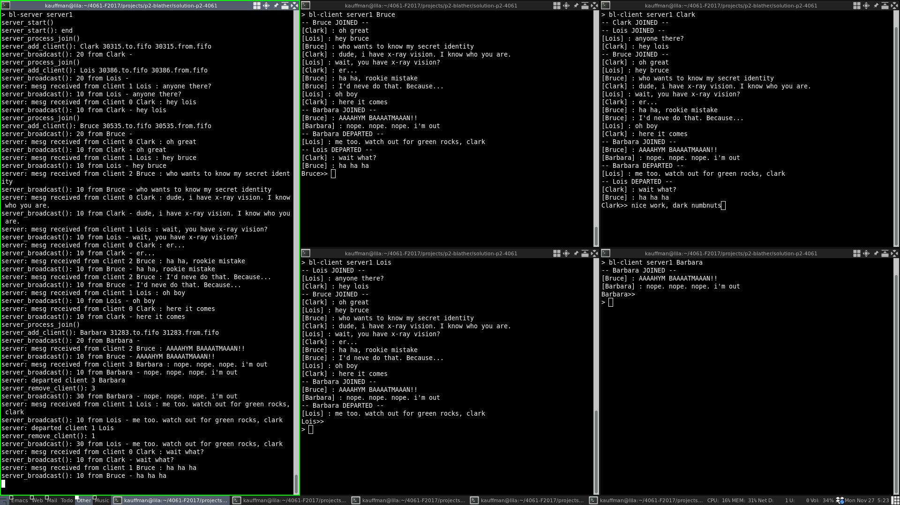
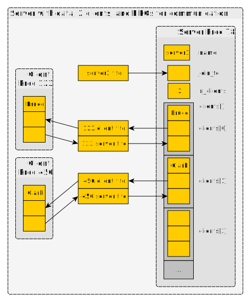
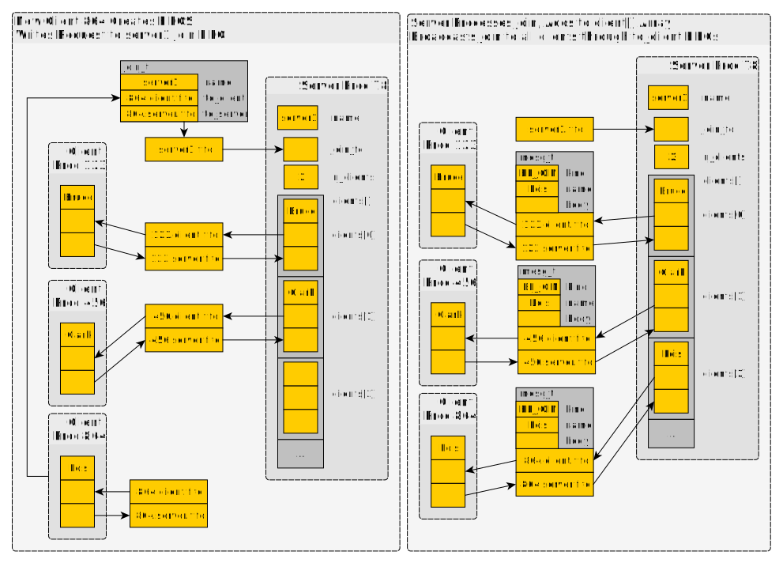
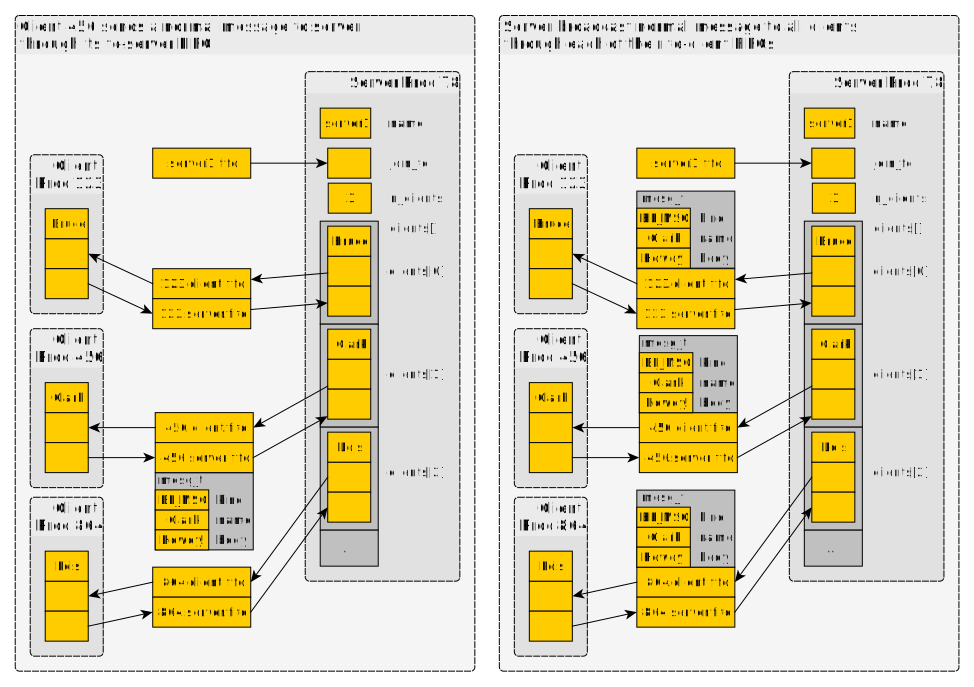
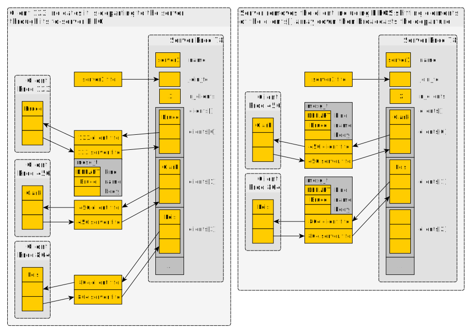

CSCI 4061 Project 2: Blather Chat Server/Client
- Due: 11:59pm Tue 12/12/2017
- Approximately 20.0% of total grade
- Submit to Canvas
- Projects may be done in groups of 1 or 2. Indicate groups in the
GROUP-MEMBERS.txtfile. - No additional collaboration with other students is allowed. Seek help from course staff if you get stuck for too long.
CODE DISTRIBUTION: p2-code.zip
TEST CODE: Not posted
CHANGELOG:
- Tue Nov 28 15:33:01 CST 2017
- Corrected project weight. Re-ordered to put optional ADVANCED features at end. Described unlinking the semaphore for final ADVANCED feature.
1 Introduction: A Chat Service
Systems programming is often associated with communication as this
invariably requires coordinating multiple entities that are related
only based on their desire to share information. This project focuses
on developing a simple chat server and client called blather. The
basic usage is in two parts.
- Server
- Some user starts
bl-serverwhich manages the chat "room". The server is non-interactive and will likely only print debugging output as it runs. - Client
- Any user who wishes to chat runs
bl-clientwhich takes input typed on the keyboard and sends it to the server. The server broadcasts the input to all other clients who can respond by typing their own input.
Chat servers are an old idea dating to the late 1970's and if you have
never used one previously, get online a bit more or read about them on
Wikipedia. Even standard Unix terminals have a built-in ability to
communicate with other users through commands like write, wall,
and talk.
Unlike standard internet chat services, blather will be restricted
to a single Unix machine and to users with permission to read related
files. However, extending the programs to run via the internet will
be the subject of some discussion.
Like most interesting projects, blather utilizes a combination of
many different system tools. Look for the following items to arise.
- Multiple communicating processes: clients to servers
- Communication through FIFOs
- Signal handling for graceful server shutdown
- Alarm signals for periodic behavior
- Input multiplexing with
select() - Multiple threads in the client to handle typed input versus info from the server
Finally, this project includes some advanced features which may be implemented for extra credit.
1.1 Basic Features
The specification below is mainly concerned with basic features of the
blather server and client. Implementing these can garner full credit
for the assignment.
1.2 ADVANCED Features : Extra Credit
Some portions of the specification and code are marked ADVANCED to indicate optional features that can be implemented for extra credit. Some of these have dependencies so take care to read carefully.
ADVANCED features may be evaluated using tests and manual inspection criteria that are made available after the standard tests are distributed.
2 Download Code and Setup
As in labs, download the code pack linked at the top of the page. Unzip this which will create a folder and create your files in that folder.
| File | State | Notes |
|---|---|---|
| GROUP-MEMBERS.txt | Edit | Fill in names of group members to indicate partnerships |
| Makefile | Create | Build project, run tests |
| server.c | Create | Service routines for the server |
| bl-server.c | Create | Main function for bl-server executable |
| bl-client.c | Create | Main function for bl-client executable |
| blather.h | Provided | Header file which contains required structs, defines, and prototypes |
| util.c | Provided | Utility methods debug messages and checking system call returns |
| simpio.c | Provided | Simplified terminal I/O to get nice interactive sessions |
| simpio-demo.c | Provided | Demonstrates simpio features, model for bl-client.c |
3 Demo / ScreenShot
Demonstrating an interactive, dynamic chat session between multiple users is difficult but the screenshot below attempts to do so. It shows the server and several clients mid-chat.
- The server
bl-serveris started in the large terminal on the left and shows output about what is going on. There is no specific output required and that shown is for debugging purposes. - There are 4
bl-clientinstances run by various users who log into the server and specify their name. The lower-right userBarbarajoins later while the upper left userBrucelogs out near the end of the session.

Figure 1: Sample blather server and client runs.
4 Overall Architecture
4.1 What Needs to be Implemented
blather has two parts: the server and client. Both need to be
written along with service routines in server.c
server.c data structure manipulations
Implement the functions in this file to manipulate the server_t and
client_t data that will ultimately be used by the server to fulfill
its role.
bl-server.c main function and signal handlers
Implement the server which manages the interactions between clients in
this file making use of the service functions in server.c to get the
job done.
bl-client.c main function and thread workers
Implement the client which allows a single user to communicate with the server in this file. The client must have multiple threads so you will need to implement some worker functions as thread entry points here.
4.2 What's Already Done
Examine the provided files closely as they give some insight into what work is already done.
blather.hcan be included in most files to make programs aware of the data structures and required functions. It contains documentation of the central data structures.util.ccontains a few functions for debugging and checking system calls.simpio.candsimpio-demo.cprovide a small library and data structure to do terminal I/O nicely. The demo program shows how it works.
4.3 Provide a Makefile
Provide a Makefile which has at least the following targets.
bl-server: builds the server executable, be included in the default targets.bl-client: builds the client executable, be included in the default targets.test-binary: compile and run the binary teststest-shell: run the shell scripts associated with integration tests
4.4 No malloc() / free() required
It may come as a surprise, but this set of programs is specifically
oriented so that no dynamic memory allocation is required. All of the
data structures are fixed size, strings have a maximum length, and
communication is done through FIFOs. Keep this in mind as you code
and avoid malloc() unless you see no other way around it as it will
likely make things harder than they need to be.
5 Basic Protocol and Architecture
Clients communicate with the server along the following lines.
bl-servercreates a FIFO at startup time. The FIFO is created with a name specified according to naming convention at startup. Examples:$> bl-server server1 # creates the server1.fifo $> bl-server batcave # creates the batcave.fifo $> bl-server fortress-of-solitude # creates the fortress-of-solitude.fifo
This FIFO is only for join requests to the server. The name of this file must be known for the clients to connect to server.
- The server then waits for clients to write join requests to join FIFO.
bl-clientcreates two FIFOs on startup:- A to-client FIFO for the server to write data intended for the client. The client reads this FIFO.
- A to-server FIFO to which the client writes and from which the server reads.
- The names of these files are inconsequential so long as they are fairly unique. Basing names for the FIFOs on the PID of the client is an easy way to do this. This avoids multiple clients in the same directory mistakenly using each other's FIFOs.
- A client writes a join request to the server which includes the names of its to-client and to-server FIFOs. All subsequent communication between client and server is done through the to-client and to-server FIFOs.
- A client reads typed input from users. When input is ready, it is sent as a mesgt to the server.
- As a server receives messages from clients, it will broadcast the message to all clients including the sender.
- The server sends notices of other kinds to the clients such as when a new client joins. Clients may send departure notices which are re-broadcast by the server.
The sections below give graphical depictions of some of the ideas of the protocols.
5.1 Server and Clients
The following diagram illustrates the single server server1 with 2
clients connected. Each client has its own FIFOs for communication
with the server and the server knows about these FIFOs.

Figure 2: Schematic of server data which has been joined by 2 clients.
5.2 Joining
This diagram illustrates how a new client can join the server. It
creates FIFOs for communication and then writes a join_t request on
the server's FIFO. The server then adds the client information to its
array and broadcasts the join to all clients.

Figure 3: New client joining the server which has two existing clients.
5.3 Normal Messages
A client wanting to communicate with others sends a normal mesg_t to
the server with its name and body filled in. The client's to-server
FIFO is used for this. The server then broadcasts the same message to
all clients including the sender.

Figure 4: Client sending a message which is broadcast to all other clients.
5.4 Departures and Removing Clients
A client can indicate it is leaving by sending an appropriate message. The server will remove its FIFOs and shift all elements in its clients array. The departure is broadcast to all clients.

Figure 5: Client sending a message which is broadcast to all other clients.
5.5 Protocol Data Types
The header file blather.h describes several data types associated
with basic communication operations. One of these is the mesg_t
struct which is used to convey information between clients and server.
// mesg_t: struct for messages between server/client
typedef struct {
mesg_kind_t kind; // kind of message
char name[MAXNAME]; // name of sending client or subject of event
char body[MAXLINE]; // body text, possibly empty depending on kind
} mesg_t;
Each message has a kind which helps determine what to do with the
messages. The kinds are defined in the mesg_kind_t enumeration which
sets up specific integers associated with each kind.
// mesg_kind_t: Kinds of messages between server/client
typedef enum {
BL_MESG = 10, // normal messasge from client with name/body
BL_JOINED = 20, // client joined the server, name only
BL_DEPARTED = 30, // client leaving/left server normally, name only
BL_SHUTDOWN = 40, // server to client : server is shutting down, no name/body
BL_DISCONNECTED = 50, // ADVANCED: client disconnected abnormally, name only
BL_PING = 60, // ADVANCED: ping to ask or show liveness
} mesg_kind_t;
Messages are sent both from client to server and from server to client through the FIFOs that connect them. The specification below will describe what actions need be taken on receiving messages.
Finally, when the a client wishes to initially join the server, it
fills in and sends a join_t.
// join_t: structure for requests to join the chat room
typedef struct {
char name[MAXPATH]; // name of the client joining the server
char to_client_fname[MAXPATH]; // name of file server writes to to send to client
char to_server_fname[MAXPATH]; // name of file client writes to to send to server
} join_t;
6 The Server
The bl-server.c program is responsible for allowing clients to
connect, become aware of one another, and communicate. It's main
functionality is to broadcast messages from one client to all others
and to broadcast status changes such as new clients that join or
depart.
6.1 Server and Client Data
To that end, the server process should maintain a server_t data
structure which is defined in blather.h as below
// server_t: data pertaining to server operations
typedef struct {
char server_name[MAXPATH]; // name of server which dictates file names for joining and logging
int join_fd; // file descriptor of join file/FIFO
int join_ready; // flag indicating if a join is available
int n_clients; // number of clients communicating with server
client_t client[MAXCLIENTS]; // array of clients populated up to n_clients
int time_sec; // ADVANCED: time in seconds since server started
int log_fd; // ADVANCED: file descriptor for log
sem_t *log_sem; // ADVANCED: posix semaphore to control who_t section of log file
} server_t;
The most prominent features of this structure are as follows.
- The
server_namewhich determines the name of the FIFO filename for joining and a few other things. - A
join_fdfile descriptor which should be attached to a FIFO to read requests from clients to join the server. - The
client[][array ofclient_tstructs that track clients connected to the server. The fieldn_clientsdetermines how full this array is.
Associated closely with the server_t is the client_t struct which
contains data on each client.
// client_t: data on a client connected to the server
typedef struct {
char name[MAXPATH]; // name of the client
int to_client_fd; // file descriptor to write to to send to client
int to_server_fd; // file descriptor to read from to receive from client
char to_client_fname[MAXPATH]; // name of file (FIFO) to write into send to client
char to_server_fname[MAXPATH]; // name of file (FIFO) to read from receive from client
int data_ready; // flag indicating a mesg_t can be read from to_server_fd
int last_contact_time; // ADVANCED: server time at which last contact was made with client
} client_t;
While the client program bl-client may make use of this struct as
well its main purpose is to help track data for the server. Prominent
features are as follows.
- The user name of the client which is provided when it joins.
- Names and file descriptors of the to-client and to-server FIFOs. The file descriptors are opened by the server based on the file names the provided by the client and used for communication between them.
- A
data_readyflag which is set and cleared by the server as messages are available.
6.2 Server Operations: server.c
To facilitate operations of bl-server main program, complete the
server.c file which provides service routines that mainly manipulate
server_t structures. Each of these has a purpose to serve in the
ultimate goal of the server.
client_t *server_get_client(server_t *server, int idx); // Gets a pointer to the client_t struct at the given index. If the // index is beyond n_clients, the behavior of the function is // unspecified and may cause a program crash. void server_start(server_t *server, char *server_name, int perms); // Initializes and starts the server with the given name. A join fifo // called "server_name.fifo" should be created. Removes any existing // file of that name prior to creation. Opens the FIFO and stores its // file descriptor in join_fd._ // // ADVANCED: create the log file "server_name.log" and write the // initial empty who_t contents to its beginning. Ensure that the // log_fd is position for appending to the end of the file. Create the // POSIX semaphore "/server_name.sem" and initialize it to 1 to // control access to the who_t portion of the log. void server_shutdown(server_t *server); // Shut down the server. Close the join FIFO and unlink (remove) it so // that no further clients can join. Send a BL_SHUTDOWN message to all // clients and proceed to remove all clients in any order. // // ADVANCED: Close the log file. Close the log semaphore and unlink // it. int server_add_client(server_t *server, join_t *join); // Adds a client to the server according to the parameter join which // should have fileds such as name filed in. The client data is // copied into the client[] array and file descriptors are opened for // its to-server and to-client FIFOs. Initializes the data_ready field // for the client to 0. Returns 0 on success and non-zero if the // server as no space for clients (n_clients == MAXCLIENTS). int server_remove_client(server_t *server, int idx); // Remove the given client likely due to its having departed or // disconnected. Close fifos associated with the client and remove // them. Shift the remaining clients to lower indices of the client[] // array and decrease n_clients. int server_broadcast(server_t *server, mesg_t *mesg); // Send the given message to all clients connected to the server by // writing it to the file descriptors associated with them. // // ADVANCED: Log the broadcast message unless it is a PING which // should not be written to the log. void server_check_sources(server_t *server); // Checks all sources of data for the server to determine if any are // ready for reading. Sets the servers join_ready flag and the // data_ready flags of each of client if data is ready for them. // Makes use of the select() system call to efficiently determine // which sources are ready. int server_join_ready(server_t *server); // Return the join_ready flag from the server which indicates whether // a call to server_handle_join() is safe. int server_handle_join(server_t *server); // Call this function only if server_join_ready() returns true. Read a // join request and add the new client to the server. After finishing, // set the servers join_ready flag to 0. int server_client_ready(server_t *server, int idx); // Return the data_ready field of the given client which indicates // whether the client has data ready to be read from it. int server_handle_client(server_t *server, int idx); // Process a message from the specified client. This function should // only be called if server_client_ready() returns true. Read a // message from to_server_fd and analyze the message kind. Departure // and Message types should be broadcast to all other clients. Ping // responses should only change the last_contact_time below. Behavior // for other message types is not specified. Clear the client's // data_ready flag so it has value 0. // // ADVANCED: Update the last_contact_time of the client to the current // server time_sec. void server_tick(server_t *server); // ADVANCED: Increment the time for the server void server_ping_clients(server_t *server); // ADVANCED: Ping all clients in the server by broadcasting a ping. void server_remove_disconnected(server_t *server, int disconnect_secs); // ADVANCED: Check all clients to see if they have contacted the // server recently. Any client with a last_contact_time field equal to // or greater than the parameter disconnect_secs should be // removed. Broadcast that the client was disconnected to remaining // clients. Process clients from lowest to highest and take care of // loop indexing as clients may be removed during the loop // necessitating index adjustments. void server_write_who(server_t *server); // ADVANCED: Write the current set of clients logged into the server // to the BEGINNING the log_fd. Ensure that the write is protected by // locking the semaphore associated with the log file. Since it may // take some time to complete this operation (acquire semaphore then // write) it should likely be done in its own thread to preven the // main server operations from stalling. For threaded I/O, consider // using the pwrite() function to write to a specific location in an // open file descriptor which will not alter the position of log_fd so // that appends continue to write to the end of the file. void server_log_message(server_t *server, mesg_t *mesg); // ADVANCED: Write the given message to the end of log file associated // with the server.
6.3 Messages Handled by the Server
The function server_handle_client() is a workhorse that will read a
message from a client and respond take appropriate action. Here are
the messages that the server should accept and respond to.
| kind | Name | Body? | Action |
|---|---|---|---|
BL_MESG |
Yes | Yes | Broadcast message to all clients. |
BL_DEPARTED |
Yes | No | Broadcast message to all clients. |
6.4 Other Messages Sent by the Server
The server will broadcast several other kinds of messages to clients under the following circumstances.
| kind | Name | Body? | Circumstance |
|---|---|---|---|
BL_JOINED |
Yes | No | Broadcast when a new client joins the server |
BL_SHUTDOWN |
No | No | Broadcast when the server starts shutting down |
| ADVANCED | |||
BL_PING |
No | No | Broadcast periodically, clients should respond with a ping to indicate liveness |
BL_DISCONNECTED |
Yes | No | Broadcast when a client has not pinged in a while to indicate disconnection. |
6.5 bl-server.c main function
Define a main() entry point in bl-server that ties all of the
server operations together into a function unit.
Listen, Select, Respond
The server main() function in its simplest form boils down to the
following pseudocode.
REPEAT:
check all sources
handle a join request if on is ready
for each client{
if the client is ready handle data from it
}
}
The advanced features build somewhat on this but not by much.
Signal Handling
The server should run indefinitely without interaction from an
interactive user. To stop it, send signals. The server should handle
SIGTERM and SIGINT by shutting down gracefully: exit the main
computation, call server_shutdown() and return 0.
7 The Client
While bl-server is a perpetual, non-interactive program, it is not
interesting with clients to connect to it allowing users to
communicate. bl-client is such a program. It allows a user to type
into the terminal to send text to the server and receive text back
from the server which is printed to the screen. The sections below
describe how to build it.
7.1 Simplified Terminal I/O
Standard terminal input and output work well in many situations but
the bl-client must intermingle the user typing while data may be
printed to the screen. This calls for somewhat finer control. To
simplify the murky area that is terminal control, the file simpio.c
provides functions which have the following net effect.
- A prompt can be set that is always displayed as the last final advancing line in the terminal.
- Text can be typed and deleted by the user.
- Any thread printing with the
iprintf()function will advance the prompt forwards without disrupting the text a user may be typing.
The program simpio-demo.c demonstrates this facility by spinning up
a user and background thread which both print to the screen. Text
printed by the background thread using iprintf() does not disrupt
text being typed by the user at the prompt.
Use simpio-demo.c as a template to begin you development on
bl-client.c noting the following.
- Initialize the simplified terminal I/O with the following sequence
simpio_set_prompt(simpio, prompt); // set the prompt simpio_reset(simpio); // initialize io simpio_noncanonical_terminal_mode(); // set the terminal into a compatible mode
- When threads want to print, use the
iprintf()function. It works likeprintf()but takes as its first argument asimpio_tobject which manages the prompt and typed text. - Analyze the input loop in
simpio-demo.cto see how to read characters from the prompt, detect a completed line, and end of input.
7.2 bl-client.c Features
Unlike the server, there are no required C functions for the client. Instead, there are a series of required features and suggestions on how to implement them.
Client Name and FIFO Creation
The client program is run as follows
$> bl-client server1 Lois # join the server1 as a user Lois $> bl-client dc-serv Bruce # join the dc-serv server as user Bruce
The first argument is the server to join and corresponds to a FIFO name that is owned by the server.
The client should create its own to-client and to-server FIFOs which become part of the join request to the server. The names of these FIFOs can be selected arbitrarily so long as they do not conflict with other user FIFO names. Examples are to create temporary file names or use the PID of the client process to choose the FIFO names.
Joining the Server
The client should construct a join_t with its name and the names of
its to-client and to-server FIFOs. This should be written to the name
of the server's FIFO which will notify the server and other clients of
the new user's arrival.
Messages Handled by Client
The client should handle the following kinds of messages from the server.
| kind | Name | Body? | Action | Print Format / Example |
|---|---|---|---|---|
BL_MESG |
Yes | Yes | [Bruce] : check this out |
|
BL_JOINED |
Yes | No | -- Bruce JOINED -- |
|
BL_DEPARTED |
Yes | No | -- Clark DEPARTED -- |
|
BL_SHUTDOWN |
No | No | !!! server is shutting down !!! |
|
| ADVANCED | ||||
BL_DISCONNECTED |
Yes | No | -- Clark DISCONNECTED -- |
|
BL_PING |
No | No | Reply | Send BL_PING message back to server |
User Input and Messages from the Server
To make the user experience reasonable, server messages should be received and printed to the screen as soon as they are available. Printing server messages should not disrupt the text input too much. This combination of requirements suggests the following.
- Use two threads, one for user interactions and the other for server interactions.
- The user thread performs an input loop until the user has completed a line. It then writes message data into the to-server FIFO to get it to the server and goes back to reading user input.
- The server thread reads data from the to-client FIFO and prints to the screen as data is read.
- Both user and server threads use the
iprintf()function to ensure that data appears correctly on the screen and cooperates with input being typed.
A few additional notes are in order on the interaction of these two threads.
- Should the user thread receive and end of input, it should send a
message to the server with kind
BL_DEPARTEDto indicate the client is shutting down. This will notify other users of the departure. The user thread should cancel the server thread and return. - If the server thread receives a
BL_SHUTDOWNmessage, the server is shutting down. This means the client should exit as well. The server thread should cancel the user thread and return.
Typed Input is Sent to the Server, not Printed
When users type input, it is echoed onto the screen by simpio at the
prompt. However, on hitting enter, the data is sent immediately to the
server as a mesg_t with kind MESG, name filled in with the
user's name and body filled in with the text line typed.
Though the message body is known by the client which just sent it, the body is not printed to the screen. Instead, the client waits for the server to broadcast the message back and prints its own message just as if it were a message from another user. This ensures that no special actions need to be taken to avoid duplicate messages.
This "print only what the server sends" feature restriction is somewhat modified by some of the advanced features described later.
7.3 Client Main Approach
To summarize, bl-client will roughly take the following steps.
read name of server and name of user from command line args
create to-server and to-client FIFOs
write a join_t request to the server FIFO
start a user thread to read inpu
start a server thread to listen to the server
wait for threads to return
restore standard terminal output
user thread{
repeat:
read input using simpio
when a line is ready
create a mesg_t with the line and write it to the to-server FIFO
until end of input
write a DEPARTED mesg_t into to-server
cancel the server thread
server thread{
repeat:
read a mesg_t from to-client FIFO
print appropriate response to terminal with simpio
until a SHUTDOWN mesg_t is read
cancel the user thread
8 Manual Inspection Criteria (50%)
The following criteria will be examined during manual inspection of code by graders. Use this as a guide to avoid omitting important steps or committing bad style fouls.
| Location | Wgt | Criteria |
|---|---|---|
| Makefile | 5 | A Makefile is provided which compiles commando |
| Any required test targets are present. | ||
| server.c | ||
server_start() |
5 | creates and opens FIFO correctly for joins, removes existing FIFO |
server_shutdown() |
closes and removes FIFO to prevent additional joins | |
| broadcasts a shutdown message | ||
| does basic error checking of system calls | ||
server_add_client() |
5 | does bounds checking to prevent overflow on add |
adds client to end of array and increments n_clients |
||
| fills in fixed fields of client data based on join parameter | ||
| makes use of strncpy() to prevent buffer overruns | ||
| opens to-client and to-server FIFOs for reading | ||
server_remove_client() |
5 | uses server_get_client() for readability |
| closes to-client and from-client FIFOs | ||
| correctly shifts array of clients to maintain contiguous client array | ||
server_check_sources() |
5 | makes use of select() system call to detect ready clients/joins |
checks join FIFO and all clients in select() call |
||
does not read data but sets read flags for join and clients |
||
| does basic error checking of system calls | ||
server_handle_join() |
5 | reads a join_t from join FIFO correctly |
adds client with server_add_client() |
||
| broadcasts join | ||
server_handle_client() |
reads a mesg_t from the to-server FIFO |
|
| processes message properly and broadcasts if needed | ||
| does basic error checking of system calls | ||
| bl-server.c | ||
| 5 | main loop makes use of the server.c routines extensively |
|
| clear code to check input sources and handle ready input | ||
| signal handling for graceful shutdown is clear | ||
| bl-client.c | ||
| main and overall | 5 | proper setup of terminal with simpio |
| use of simpio for input and output | ||
| clear creation and joining of threads | ||
| resets terminal at end of run | ||
| user thread | 5 | clear use of a user thread to handle typed input |
| user thread sends data to server | ||
| cancels server thread at end of input before returning | ||
| server thread | 5 | clear use of a server thread to listen data on to-client FIFO |
| clear handling of different kinds of messages coming from server | ||
| cancels user thread on receiving shutdown message and returns | ||
| 50 | Total |
9 ADVANCED Features
The following advanced features may be implemented to garner extra credit on the total project score for the semester. Each additional feature is worth the extra credit indicated.
9.1 Server Ping and Disconnected Clients (10%)
Clients may terminate abruptly in the real world before they have a
chance to send a BL_DEPARTED message to the server. This additional
feature adds period pinging to the server and clients. A ping is a
short message just to establish whether a communication partner is
still present. In this case, it is a message with kind BL_PING.
Implementing this feature will cause the server broadcast a ping to all clients every second. Clients should respond immediately by sending a ping back.
To detect disconnected clients, the server should maintain its
time_sec incrementing it each second. Whenever a message is
received from a client, including BL_PING messages, the server
updates the client's last_contact_time to the current server
time. Any client that abruptly departs will eventually have a large
gap between its last_contact_time and the time_sec.
Every second, the server runs the function
server_remove_disconnected(server, disconnect_secs). If any client
with a difference in last_contact_time and
server_remove_disconnected that is larger than the argument
disconnect_secs should be removed. A BL_DISCONNECTED message
should be broadcast for this client to notify other clients of the
change.
A good way to implement periodic activity is to use the alarm()
function. This arranges for a periodic signal to be sent to the server
process. This should be done in main() for bl-server.c. The
signal handler for the SIGALRM that is raised can set a variable to
indicate that 1 second has passed. In the main loop of the server, a
condition checks this variable and performs the ping broadcast and
checks for disconnected clients.
All changes for this feature are on the server side. Additional functions to write or modify are as follows.
// server.c // Modify int server_handle_client(server_t *server, int idx) // Write void server_tick(server_t *server) void server_ping_clients(server_t *server) void server_remove_disconnected(server_t *server, int disconnect_secs) // bl-server.c int main(int argc, char *argv[])
9.2 Binary Server Log File (10%)
There is cause to want a log of all messages that pass through a server. This feature will cause the server to write such a log in a binary file.
The file should be named after the server name similarly to the join FIFO. For example
$> bl-server server1 # creates server1.fifo # creates server1.log $> bl-server batcave # creates batcave.fifo # creates batcave.log
The format of this binary log file is as follows.
- The first part should contain a binary
who_tstructure which has the active users in it. To complete the logging feature, thewho_tdoes not need to be kept to date. - After the
who_tis a growing sequence ofmesg_tstructs in the log file. Any message that is broadcast by the server EXCEPT for pings is written to the end of this log, NOT in text format but as the direct binary representation of amesg_t. - Each new message that is broadcast is appended to the end of the log in binary format.
When the server starts up, the log file should be created and the
log_fd field filled with its file descriptor. A good place to write
log messages is during server_broadcast(). In it, any message that
is not a ping should be written to the end of log.
When the server shuts down, close the file descriptor of the log but do not remove the file. On startup, re-open any existing log and continue appending to it.
This feature is implemented entirely in the server and requires modification of the following functions.
// server.c void server_start(server_t *server, char *server_name, int perms) void server_shutdown(server_t *server) int server_broadcast(server_t *server, mesg_t *mesg) void server_write_who(server_t *server) void server_log_message(server_t *server, mesg_t *mesg) // bl-server.c int main(int argc, char *argv[])
In addition, provide a file called bl-showlog.c which will read the
binary log file and print its output. This should include the who_t
at the beginning and all log messages. Here is a demo run including
the presumed Makefile target. Output is nearly identical to what is
shown in the client.
> make bl-showlog gcc -Wall -g -c bl-showlog.c gcc -Wall -g -c util.c gcc -Wall -g -o bl-showlog bl-showlog.o util.o -lpthread > file server1.log server1.log: data > ./bl-showlog server1.log 3 CLIENTS 0: Batman 1: Clark 2: Barbara MESSAGES -- Bruce JOINED -- -- Clark JOINED -- -- Lois JOINED -- [Bruce] : hey, want to know secret identity? [Clark] : dude, I have x-ray vision [Lois] : wait, you have x-ray vision [Clark] : ah, er, I mean... [Bruce] : ha ha. I'd never do something dumb like that. [Lois] : why not? [Clark] : oh boy, here it comes... [Bruce] : because... [Lois] : ?? [Bruce] : AHYM BAAATMAN!!! [Clark] : walked into that one [Lois] : yup -- Barbara JOINED -- [Barbara] : hey guys [Clark] : hey Barbara [Lois] : what up! [Barbara] : Did I miss anything important? [Clark] : the big "reveal" from Bruce... [Barbara] : what, that he's Batman? [Lois] : yup [Bruce] : wait, how did you know that? [Barbara] : you told me when we were dating [Lois] : me too [Bruce] : awkward. time for a SMOKE BOMB!!! -- Bruce DEPARTED -- [Barbara] : that guy >
9.3 Last Messages for Client (10%)
This feature requires the Binary Server Log File Feature.
Clients that recently join a server have no idea what has transpired prior to their joining. This can be ameliorated if clients can access the binary log to examine the last N messages. For example:
$> bl-client server1 Lois -- Lois JOINED -- [Clark] : eek! -- Clark DEPARTED -- [Lois] : what's his deal? [Bruce] : um.. Lois> %last 10 ==================== LAST 10 MESSAGES [Bruce] : what up man? [Clark] : not much, just down in the fortress of solitude [Bruce] : with lois [Clark] : nope. lana [Bruce] : nice -- Lois JOINED -- [Clark] : eek! -- Clark DEPARTED -- [Lois] : what's his deal? [Bruce] : um.. ==================== Lois>> wtf?!?
To accomplish this bl-client should examine the typed line that is
entered to see if it starts with the string %last in which case it
will be followed by an integer which is the number of messages
requested.
On detecting this command request, client should open the binary log
file for the server and seek to the end of it using lseek(). Note
that the exact position in the binary log file can be calculated
immediately by using.
sizeof(mesg_t- The number of messages requested
- The argument
SEEK_ENDtolseek()
Thus no looping is required to find that position.
The client should then read off these messages and print them to the screen. It is a good idea to write function that will print logged messages to keep the main loop and thread loops simple in the client.
No server interaction is required for this feature so long as the
server is producing the binary log file. Modify only bl-client.c.
Modify the following code for this feature.
// bl-client.c // helper functions and maybe main() int main(int argc, char *argv[])
9.4 who_t for Client and Server (10%)
Users who log into the server have no way of knowing who is logged in. This feature ameliorates that.
- The server writes its active users as a
who_tstructure to the beginning of its binary log every second at the same time as it would check for disconnected users. - Clients can read the
who_tat the beginning of the log file to determine which users are connected to the server. The client the provides a%whocommand which prints active users. - To prevent the server from writing the
who_tstructure while a client is reading or vice versa, the server creates a semaphore which must be acquired to access this part of the log.
The who_t structure is a simple, fixed size array of strings.
// who_t: data to write into server log for current clients (ADVANCED)
typedef struct {
int n_clients; // number of clients on server
char names[MAXCLIENTS][MAXNAME]; // names of clients
} who_t;
This fixed size means every time it is written it will overwrite the
same bytes. The server should write it every second in the same block
using the same approach as is used to check for disconnected clients
(alarm(1)). Use of pwrite() is suggested to allow the log_fd to
stay in position to write to the end of the log file.
The client should implement the %who command by checking the
simpio->buf for the string. It should then acquire the semaphore,
read the who_t and print the results the screen similar to the
following.
-- Barbara JOINED -- [Barbara] : Bruce? [Barbara] : Bruce, are you there? [Clark] : Ummm.... [Barbara] : hang on Barbara>> %who ==================== 3 CLIENTS 0: Batman 1: Clark 2: Barbara ==================== [Barbara] : (sigh) Batman? [Batman] : I AM THE NIGHT! Barbara>>
The server is responsible for creating the semaphore which controls
access to the who_t portion of the log. Follow the same naming
convention as before.
$> bl-server server1 # creates server1.fifo FIFO # creates server1.log binary log file # creates /server1.sem POSIX semaphore $> bl-server batcave # creates batcave.fifo FIFO # creates batcave.log binary log file # creates /batcave.sem POSIX semaphore
A few notes on POSIX semaphores.
- They are created / accessed with the
sem_open()function which takes a name which must start with a forward slash, thus the/server1.semconvention. - POSIX semaphores are singular, not arrays of semaphores like System
V semaphores. The have only
sem_wait()(decrement) andsem_post()(increment) operations. However, these are sufficient for the present purpose. - When the server wants to write a
who_tinto the log, it acquires the semaphore withsem_wait(), writes, then releases withsem_post(). - Clients follow a similar protocol when reading the
who_t. - When shutting down the, server should unlink the semaphore with
sem_unlink().
Modify the following code for this feature.
// server.c void server_start(server_t *server, char *server_name, int perms) void server_shutdown(server_t *server) void server_write_who(server_t *server) // bl-server.c int main(int argc, char *argv[]) // bl-client.c // helper functions and maybe main() int main(int argc, char *argv[])
11 Zip and Submit
11.1 Submit to Canvas
Once your are confident your code is working, you are ready to submit. Ensure your folder has all of the required files. Create a zip archive of your lab folder and submit it to blackboard.
On Canvas:
- Click on the Assignments section
- Click on the appropriate link for this lab
- Scroll down to "Attach a File"
- Click "Browse My Computer"
- Select you Zip file and press OK
11.2 Late Policies
You may wish to review the policy on late project submission which will cost you late tokens to submit late or credit if you run out of tokens.
http://www-users.cs.umn.edu/~kauffman/4061/syllabus.html#late-projects
No projects will be accepted more than 48 hours after the deadline.